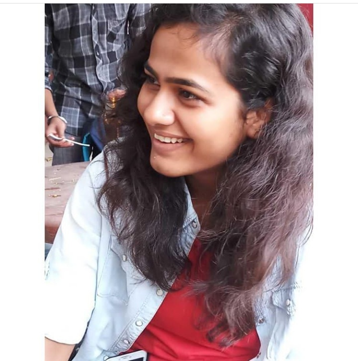

Abhimanyu Rawat and Astha Vaish
Marketing is not just a part , it's the whole business.
Marketing is an ongoing communication exchange with customers in a way that educates, informs and builds a relationship over time. With trust, a community builds organically around products and services and those customers become as excited about the products as you are . Marketing is a really great way to identify what grabs people's attention and gets them excited about your brand. It involves them in the process, and yeah, the best part, builds great relationships in the process.
For a fest to be successful there should be an urge of excitement and trust in the audience. Hereby this goal is achieved by a strong marketing team.
Marketing Coordinators